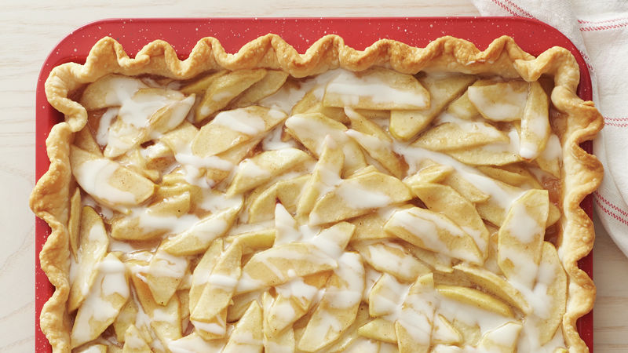

Apple Slab Pie

Description
This crowd-sized treat is made with two Pillsbury™ Pie Crusts, a layer of tender spiced apple slices and last, but definitely not least, a drizzle of sweet glaze hot out of the oven!
Over one hundred home cooks can’t get enough of this easy five-star dessert and with a serving of 24, there’ll be ample opportunity to share the love with your nearest and dearest too.
Ingredients
- 1 box (14.1 oz) refrigerated Pillsbury™ Pie Crusts (2 Count), softened as directed on box
- 1 cup granulated sugar
- 3 tablespoons all-purpose flour
- 1 teaspoon ground cinnamon
- 1/4 teaspoon ground nutmeg
- 1/4 teaspoon salt
- 1/2 tablespoons lemon juice
- 9 cups thinly sliced, peeled apples (9 medium)
- 1 cup powdered sugar
- 2 tablespoons milk
Steps
- Heat oven to 450°F. Remove pie crusts from pouches. On lightly floured surface, unroll and stack crusts one on top of the other. Roll to 17x12-inch rectangle. Fit crust into 15x10x1-inch pan, pressing into corners. Fold extra crust under, even with edges of pan.
- In small bowl, mix granulated sugar, flour, cinnamon, nutmeg, salt and lemon juice. Add apples, stirring to coat. Spoon apple mixture into crust-lined pan.
- Bake 33 to 38 minutes or until crust is golden brown and filling is bubbly. Cool in pan on cooling rack 45 minutes.
- In small bowl, mix powdered sugar and milk until well blended. Drizzle over pie. Let stand until glaze is set, about 30 minutes.